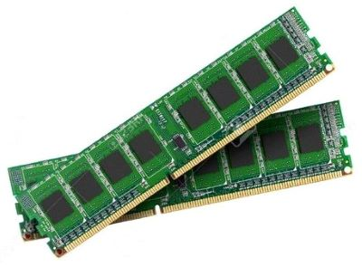

THE SYSTEM UNIT
The system unit,
like the one above is the case that contains all the electronic
components of any computer system.
The electronic
components are considered internal hardware seeing that they are
inside the system unit and you cannot see when you look at the
computer.
These components inside the system unit are what
process the data and really makes the computer work.
Internal components are as follow
Power Supply
The power supply converts electricity into the current works for
the computer. When the computer is turned on the power supply
allows converted electricity to travel to other components inside
the computer.
Motherboard
The motherboard is the circuit board that holds the main internal
components of the computer together. On the motherboard there are
three major cards; sound card that operates the sound, the video
card that handles the graphics that you see on the monitor and the
modem card which allows computers to communicate with each other.
Also on the motherboard is the Central Processing Unit (CPU),
processor or brain of the computer. The CPU controls information
and tells the other components inside the computer what to do.

RAM's
RAM stands for random access memory. This memory holds the
information you are working with while the computer is turned on.
Once you turn the computer off all the information that was in RAM
will be gone. ROM stands for read only memory. This memory holds
information that you can only read, but not erase. Information in
ROM is built in and is always there even when the computer is
turned off.


RAM(Random Access Memory) is a part of computer's Main Memory which
is directly accessible by CPU. RAM is used to Read and Write data
into it which is accessed by CPU randomly. RAM is volatile in
nature, it means if the power goes off, the stored information is
lost. RAM is used to store the data that is currently processed by
the CPU. Most of the programs and data that are modifiable are
stored in RAM.
Integrated RAM chips are available in two
form:
- SRAM(Static RAM)
- DRAM(Dynamic RAM)
SRAM
The SRAM memories consist of circuits capable of retaining the
stored information as long as the power is applied. That means this
type of memory requires constant power. SRAM memories are used to
build Cache Memory.
SRAM Memory Cell: Static
memories(SRAM) are memories that consist of circuits capable of
retaining their state as long as power is on. Thus this type of
memories is called volatile memories. The below figure shows a cell
diagram of SRAM. A latch is formed by two inverters connected as
shown in the figure. Two transistors T1 and T2 are used for
connecting the latch with two bit lines. The purpose of these
transistors is to act as switches that can be opened or closed
under the control of the word line, which is controlled by the
address decoder. When the word line is at 0-level, the transistors
are turned off and the latch remains its information. For example,
the cell is at state 1 if the logic value at point A is 1 and at
point B is 0. This state is retained as long as the word line is
not activated.
For Read operation, the word line is
activated by the address input to the address decoder. The
activated word line closes both the transistors (switches) T1 and
T2. Then the bit values at points A and B can transmit to their
respective bit lines. The sense/write circuit at the end of the bit
lines sends the output to the processor.
For Write
operation, the address provided to the decoder activates the word
line to close both the switches. Then the bit value that to be
written into the cell is provided through the sense/write circuit
and the signals in bit lines are then stored in the cell.
DRAM
DRAM stores the binary information in the form of electric charges
that applied to capacitors. The stored information on the
capacitors tend to lose over a period of time and thus the
capacitors must be periodically recharged to retain their usage.
The main memory is generally made up of DRAM chips.
DRAM
Memory Cell: Though SRAM is very fast, but it is expensive because
of its every cell requires several transistors. Relatively less
expensive RAM is DRAM, due to the use of one transistor and one
capacitor in each cell, as shown in the below figure., where C is
the capacitor and T is the transistor. Information is stored in a
DRAM cell in the form of a charge on a capacitor and this charge
needs to be periodically recharged.
For storing
information in this cell, transistor T is turned on and an
appropriate voltage is applied to the bit line. This causes a known
amount of charge to be stored in the capacitor. After the
transistor is turned off, due to the property of the capacitor, it
starts to discharge. Hence, the information stored in the cell can
be read correctly only if it is read before the charge on the
capacitors drops below some threshold value.
Types of DRAM
There are mainly 5 types of DRAM:
Asynchronous
DRAM (ADRAM): The DRAM described above is the asynchronous type
DRAM. The timing of the memory device is controlled asynchronously.
A specialized memory controller circuit generates the necessary
control signals to control the timing. The CPU must take into
account the delay in the response of the memory.
Synchronous DRAM (SDRAM):These RAM chips access
speed is directly synchronized with the CPU's clock. For this, the
memory chips remain ready for operation when the CPU expects them
to be ready. These memories operate at the CPU-memory bus without
imposing wait states. SDRAM is commercially available as modules
incorporating multiple SDRAM chips and forming the required
capacity for the modules.
Double-Data-Rate
SDRAM (DDR SDRAM): This faster version of SDRAM performs its
operations on both edges of the clock signal; whereas a standard
SDRAM performs its operations on the rising edge of the clock
signal. Since they transfer data on both edges of the clock, the
data transfer rate is doubled. To access the data at high rate, the
memory cells are organized into two groups. Each group is accessed
separately.
Rambus DRAM (RDRAM):The
RDRAM provides a very high data transfer rate over a narrow
CPU-memory bus. It uses various speedup mechanisms, like
synchronous memory interface, caching inside the DRAM chips and
very fast signal timing. The Rambus data bus width is 8 or 9 bits.
Cache DRAM (CDRAM):This memory is a special
type DRAM memory with an on-chip cache memory (SRAM) that acts as a
high-speed buffer for the main DRAM.
Difference between SRAM and DRAM
| SRAM | DRAM |
| SRAM has lower access time, so it is faster compared to DRAM | DRAM has higher access time, so it is slower than SRAM |
| SRAM is costlier than DRAM | DRAM costs less compared to SRAM |
| SRAM requires constant power supply, which means this type of memory consumes more power. | DRAM offers reduced power consumption, due to the fact that the information is stored in the capacitor. |
| Due to complex internal circuitry, less storage capacity is available compared to the same physical size of DRAM memory chip | Due to small internal circuitry in the one-bit memory cell of DRAM, the large storage capacity is available. |
| SRAM has low packaging density | DRAM has high packaging density |
Disk Drives
The disk drive is the device that reads information that is
on disk. Generally speaking most computers have three disk drives;
hard disk drive, floppy disk drive and CD-Rom drive. However, there
computers that have DVD-Rom drive. While the hard disk is hidden
inside the computer the floppy and CD-Rom drives are accessible
from the front of the system unit.